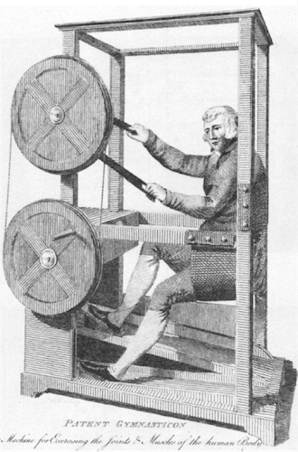

Previously on Return of Kings, I have elaborated on various personality traits. However, there is one important personality trait that has largely been ignored: neuroticism. One tends to associate it with women and weaker men. The truth is, however, that in modern societies many men suffer from depression or borderline depression for a variety of reasons.
While we cannot change the larger environments that we currently live in, we may do something about our own lives and micro environments. Many of the suggested efforts concern health and nutrition, rather than medication or abstract psychological theories.
1. Sleep 7-9 hours a day

If you have trouble sleeping, it is easier said than done to sleep enough. Nevertheless, it’s of chief importance to have enough sleep in order to repair your body and brain cells, as well as to decrease your cortisol levels.
2. Do resistance training in order to increase your testosterone level

As has been explained on these pages, low testosterone levels may lead to depression. Therefore resistance training, combined with proper nutrtion and recovery, may help to increase it.
3. Lose weight if necessary
Higher levels of body fat are associated with lower testosterone, and thus indirectly higher levels of neuroticism. Given that fat people are likely to eat more inflammatory food, these two negative things taken together may be a reason to lose body fat. It often goes hand in hand. 10-20% body fat is a healthy and attainable spectrum.
4. Avoid inflammatory food and eat properly
Inflammatory food is linked with higher levels of neuroticism. The casual relationship may either be that neurotic people eat more crap because they are depressed or that certain foodstuffs increase neuroticism. Recent evidence suggests that the latter is the case. No wonder why so many fat Americans are on antidepressants.
Avoid sugar, processed meat, saturated fat and trans fat foods, vegetable-oil, fried foods, refined flour, dairy, artificial sweeteners and additives, as well as too much alcohol. Instead, eat whole boiled eggs, fish, chicken filets, hazelnuts, almonds, olive oil, fruit, vegetables, and spices such as turmeric (found in curry), ginger, and cardamom.
5. Have a schedule for the most of your activities
As much as we may dislike our jobs and all sorts of other daily tasks, it is in fact healthy to have daily routines. Live through your work day, exercise in the evening (or morning if you prefer that), and do something constructive in the evening, such as reading a novel or spending time with someone important.
6. Pray, meditate or relax briefly every day
For a serious Christian or Buddhist, prayer or meditation are already mandatory practices so to speak. For the layman, however, one must be influenced by similar practices.
What has helped me to relax and increase my level of wellness, besides training and eating properly, is to lay down, close my eyes, lay one hand on my chest, and take long and deep breaths for about 5-10 minutes. Let whatever thought that emerges come: neither add fuel to, nor try to block such perceptions. Just let them come and go like people in crowded public areas. I mainly do this prior to sleep. This is like an ABC relaxation exercise without any New Age mumbo-jumbo on top.
7. Get off the internet, often, or at least every now and then

Online activities are connected to pretty much everything most of us do. It’s important for everyone who is not a monk or ascetic, although many monks these days do also use the Internet, at least in South Korea.
The downsides on the other hand are instant gratification, stimuli addiction, procrastination, sleeping problems, and increased stress levels. Get off the internet once in a while.
8. Spend considerable time in nature

Instead of staring into a computer or smartphone, gaze at trees, rocks, hills, plains, and grass. Although the causal relationships have not been completely disentangled, it appears as if considerable time spent in green spaces increases health and well-being.
For the rural man that implies woods, fields and plains, while an urban man may occasionally have to go to the country or visit a city park every week.
9. Have something to look forward to

Moreover, it might be beneficial to have something to look forward to besides the next chapter of the book you are currently reading, or the next chest and triceps workout at the local fitness center. Likely that may be a trip in your home country or overseas.
In closing
Instead of consuming chemicals or taking leftist psychoanalysts seriously, make concrete and sound efforts to decrease or prevent self-inflicted neuroticism from affecting you. While you cannot change the larger culture and society, you can affect certain aspects of your own life.
For more of William Adams’ material, check out his website Syncretic Politics.
Read More: 7 Beneficial Activities That Cost You No Money